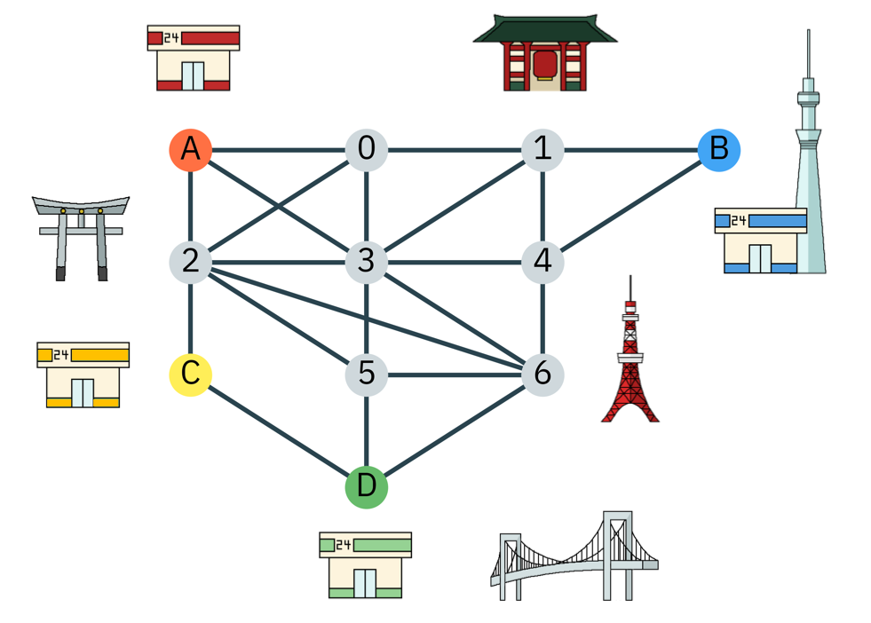

自治体のコンビニ出店プラン（2019年 Week4）#
問題
東京のZ市は11の区域からなる自治体で、すでに4社のコンビニ(A社,B社,C社,D社)が本社の1店舗を別々の区域に展開しています。
現在の出店状況は地図の通りです。地図上の各ノードはそれぞれの区域を表しており、地図上のエッジは、エッジの両端の区域が隣り合っていることを表しています。
市長のあなたは、残りの7区域にもコンビニを誘致しようとしましたが、４社から以下の条件が提示されました。
1つの区域に出店出来るのは1社のコンビニのみ
自社のコンビニは、隣接する区域に自社のコンビニが既に出店している場合は出店しない。
あなたはこれらの条件を満たす出店案を提示できるでしょうか？
week2,3で使ったグローバーのアルゴリズムをiteration回数=5で用いて、条件を満たす全ての出店案を列挙してみてください。

実行時の注意#
バックエンドは 32-qubitシミュレーターを指定してください. (e.g. backend = provider.get_backend(‘ibmq_qasm_simulator’))
回路の規模が大き過ぎる場合、実行時間が長くなる可能性があります（具体的には30分から60分等。ジャッジが作成した回答例はもっと短い時間で処理が完了します）。自分のジョブが正しく実行されているか確認したい場合は、下記のページで確認してください。
https://quantum-computing.ibm.com/results
実行出来ているか心配だからといって何度も同じjobを投げないでくださいシミュレーター実行時は下記のコードを用いて実行してください。下記のコード内ではサンプル数を増やすために
shotsを8000に、シードを固定するためにseed_simulatorを12345に、シミュレーターの実行速度を向上させるためにbackend_options={"fusion_enable":True}を設定しています。回路のなかでリセットのオペレーション (i.e. qc.reset()) は使用しないでください。
provider = IBMQ.load_account()
backend = provider.get_backend('ibmq_qasm_simulator')
job = execute(qc, backend=backend, shots=8000, seed_simulator=12345, backend_options={"fusion_enable":True})
result = job.result()
count = result.get_counts()
print(count)
Caution
それぞれの会社については、A社を\(00\)、B社を\(01\)、C社を\(10\)、D社を\(11\)とマッピングするものとします。
古典レジスタc[2n], c[2n+1]にn番目の区域に出店するコンビニをマッピングしてください。
答えを知らない状態でも作成できるオラクルを用いてください（言い換えると、古典の最適化ソルバ等で答えを計算して、それを基にオラクルを作成しないでください！）
Unroller以外のtranspilerのpassを用いないでください（言い換えると、既存の最適化用等のpassを使わず、自分の力で戦ってください）
例:0番目の区域に出店するコンビニがB社の場合、古典レジスタc[0], c[1]にそれぞれ\(0\)と\(1\)をマッピングします。
上記提出時の注意を踏まえて、シミュレーターでの実行結果から、確率が高いビット列上位9個を基に作成したコンビニの配置案とUnrollerを用いて回路をu3とCXに分解してください。
回答ファイルは下記のプログラムを用いて作成してください。
下記のcircuitとresultsとnameとtimesに作成した回路と実行結果と名前と提出回数を代入すれば自動で回答ファイルが作成されます。
回答ファイル内ではA社、B社、C社、D社は0、１、２、３にマッピングされています。
回答ファイルのサンプル 下記のプログラムで作成される回答ファイルはこのようなファイルになります（実際の値は下記とは異なります）。
{"ans": [["01230123012", 30], ["01230123012", 30], ["01230123012", 30], ["01230123012", 30], ["01230123012", 30], ["01230123012", 30], ["01230123012", 30], ["01230123012", 30], ["01230123012", 30], "costs": {"u3": 20000, "cx": 10000, "barrier": 20, "measure": 20}}
回答ファイル作成#
回路が大きい場合、Unrollerの処理に時間がかかる可能性があります。
もし、処理が終わらない場合、使用していないウィンドウを閉じたりJupyter NotebookのKernelを再起動する等し、Unrollerの処理を再実行してください。
# Input your quantum circuit
circuit='Input your circuit'
# Input your result of the execute(groverCircuit, backend=backend, shots=shots).result()
results = 'Input your result'
count=results.get_counts()
# Input your name or your team name ('Team details form'に記入した通りにチーム名を入力してください)
name='Input your team name as exactly as you inputted it in the team details form'
# Please indicate the number of times you have submitted your answer so far.
# For example, If it's your 1st time to submit your answer, write times='1'. If it's your 5th time to submit your answer, write times='5'.
# Do not forget to put single quotations to make the variable 'Str'' type
times='Input the number of times you have submitted your answer so far'
import json
from qiskit.transpiler import PassManager
from qiskit.transpiler.passes import Unroller
# Unroll the circuit
pass_ = Unroller(['u3', 'cx'])
pm = PassManager(pass_)
new_circuit = pm.run(circuit)
# obtain gates
gates=new_circuit.count_ops()
#sort count
count_sorted = sorted(count.items(), key=lambda x:x[1], reverse=True)
# collect answers with Top 9 probability
ans_list = count_sorted[0:9]
# reverse ans_list
ans_reversed = []
for i in ans_list:
ans_temp=[i[0][::-1],i[1]]
ans_reversed.append(ans_temp)
# convert each 2 bits into corresponding color. Add node0(0),node3(1),node8(2) and node11(3)
ans_shaped = []
for j in ans_reversed:
ans_temp=j[0]
nodeA = 0
node0 = int(ans_temp[0] + ans_temp[1], 2)
node1 = int(ans_temp[2] + ans_temp[3], 2)
nodeB = 1
node2 = int(ans_temp[4] + ans_temp[5], 2)
node3 = int(ans_temp[6] + ans_temp[7], 2)
node4 = int(ans_temp[8] + ans_temp[9], 2)
nodeC = 2
node5 = int(ans_temp[10] + ans_temp[11], 2)
node6 = int(ans_temp[12] + ans_temp[13], 2)
nodeD = 3
nodes_color = str(nodeA) + str(node0) + str(node1) + str(nodeB) + str(node2) + str(node3) + str(node4) + str(nodeC) + str(node5) + str(node6) + str(nodeD)
ans_shaped.append([nodes_color,j[1]])
# write the result into '[your name]_final_output.txt'
filename=name+'_'+times+'_final_output.txt'
dct={'ans':ans_shaped,'costs':gates}
with open(filename, 'w') as f:
json.dump(dct, f)
回答ファイル検証#
# Input a path of your submitted file
your_path='Input a path of your submitted file'
import json
from pathlib import Path
p= Path(your_path)
# Verify your information
f_name=p.name
your_info=f_name.split('_')
print('Your name: ', your_info[0])
print('The number of times you have submitted your answer: ', your_info[1])
with open(p, 'r') as f:
print(f)
your_ans=json.load(f)
print('Does your submission file have 9 answers?')
if (len(your_ans['ans'])!=9):
print('- No, make sure you have 9 answers with top 9 probabilities')
else:
print('- Yes')
print('- Your plan: ', your_ans['ans'])
print('What is your cost?')
your_cost=your_ans['costs']['u3'] + 10*your_ans['costs']['cx']
print('- ', your_cost)